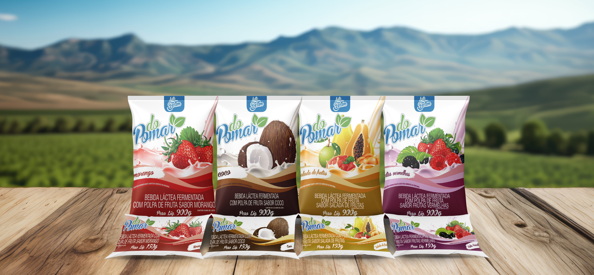
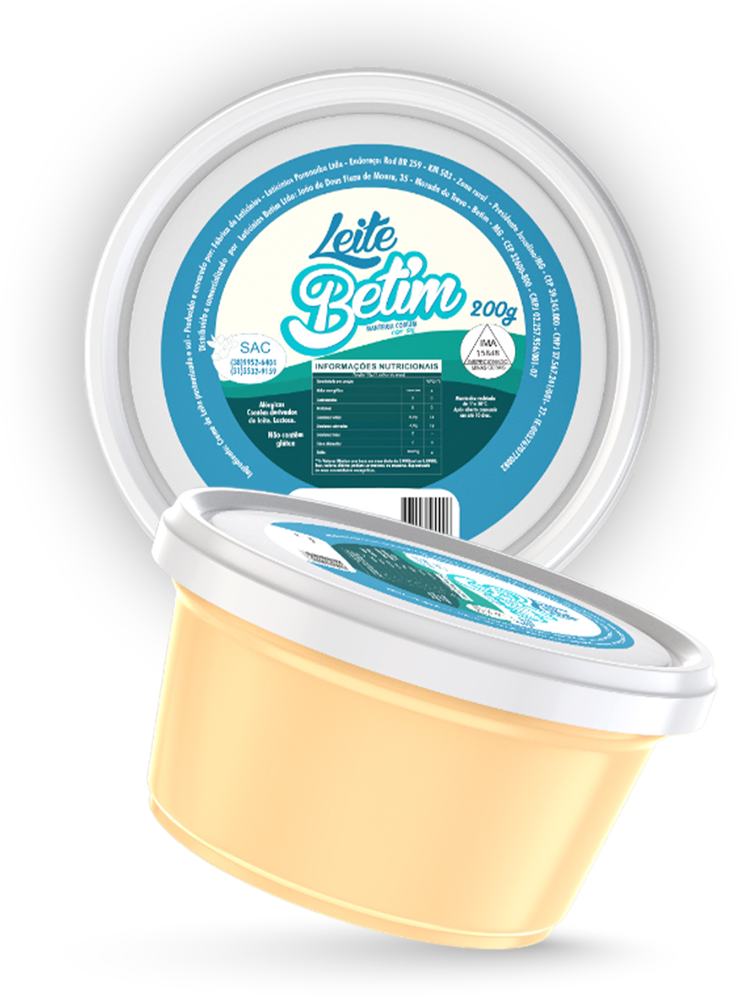
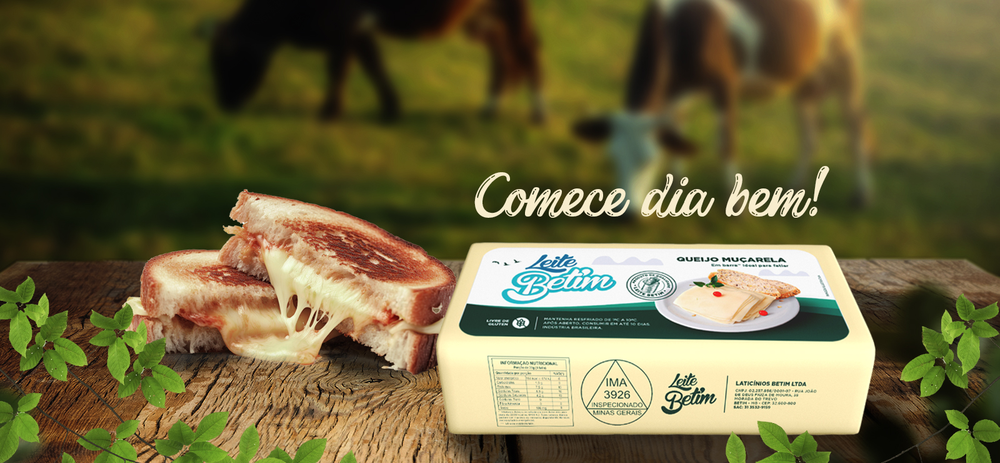
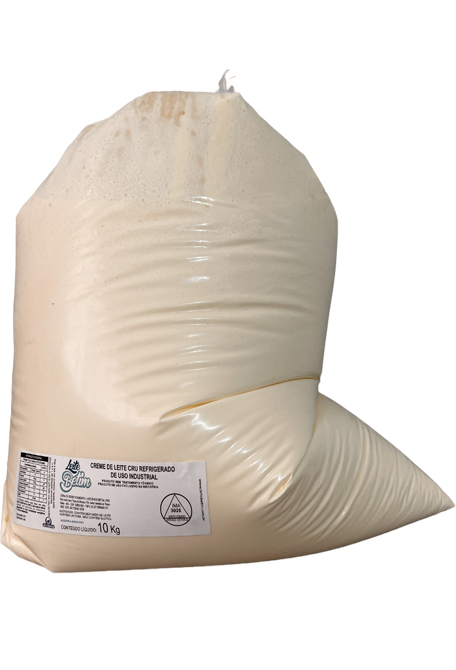
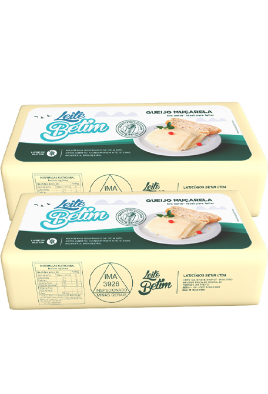
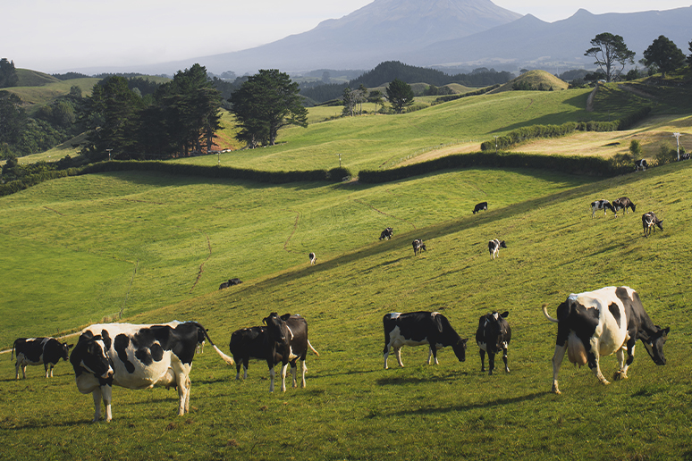
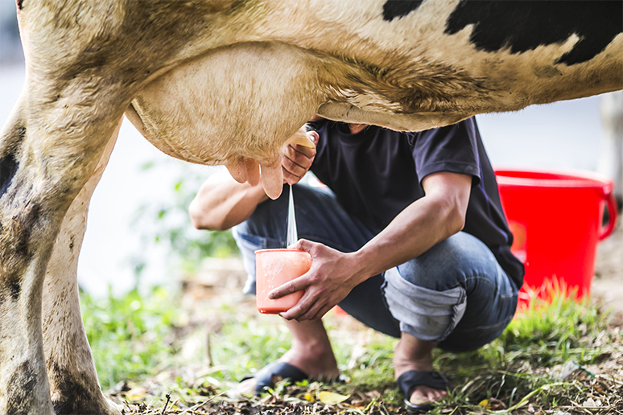
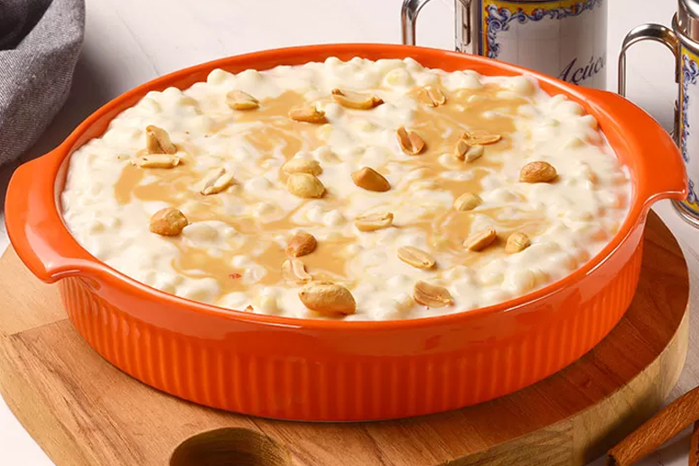
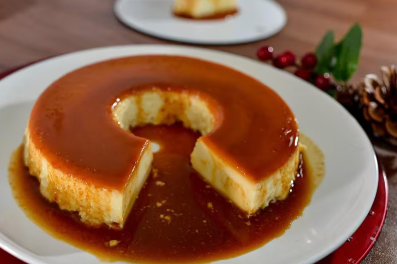

Bebidas lácteas com polpa de fruta em 150g e 900g.
Quatro sabores de alto giro no varejo: Morango, Coco, Frutas Vermelhas e Salada de Frutas, disponíveis em sachê individual ou embalagem econômica familiar.
Laticínios frescos de Betim, com qualidade inspecionada e entrega rápida para toda a Grande BH.


Toque no produto para ver detalhes e cotar.

Quatro sabores de alto giro no varejo: Morango, Coco, Frutas Vermelhas e Salada de Frutas, disponíveis em sachê individual ou embalagem econômica familiar.

Fatiamento limpo, derretimento uniforme e sabor autêntico para padarias, supermercados, lanchonetes e o café da manhã de todo dia.
Padronização, regularidade de entrega e preço de atacado.
Matéria-prima refrigerada de uso industrial com inspeção IMA 3926 e estabilidade de gordura.
Barras de muçarela para fatiar, baldes e barras de requeijão cremoso para fornos e recheios.
Barra de doce de leite tradicional e doce de leite com coco para padarias, empórios e confeitaria.
Leites 1L e 200ml, manteigas 200g/500g e linha Do Pomar com excelente margem para revenda.

Creme de Leite 10kg Uso exclusivo industrial
Muçarela em Barra Ideal para fatiar e gratinarDa Fazenda Morada do Sol, em Betim, para toda a Grande BH.
Início do beneficiamento próprio em Betim, priorizando leite puro recém-ordenhado e respeito ao produtor rural.
Planta equipada com tanques isotérmicos em inox, análises laboratoriais por lote e pasteurização controlada.
Distribuição consolidada nos supermercados, padarias, mercearias e casas de carnes mais exigentes da Região Metropolitana.


Sobremesas e preparos práticos testados para o dia a dia da sua família com a linha Leite Betim.

Cremosa, aromática e mesclada com colheradas de doce de leite e amendoim torrado.

Clássico mineiro de liquidificador com calda dourada e toque especial de queijo.

Feito apenas com Leite Pasteurizado Leite Betim e fermento natural para toda a semana.
Cadastre seu comércio, peça a tabela de preços ou tire dúvidas direto no WhatsApp.
Segunda a sexta, das 08h às 17h30
Rua João de Deus Fiúza de Moura, 35, Morada do Trevo, Betim/MG